Beyond the Bar Chart
Creative data visualisation
By Peter Cook / @prcweb
Bar charts

Pie charts
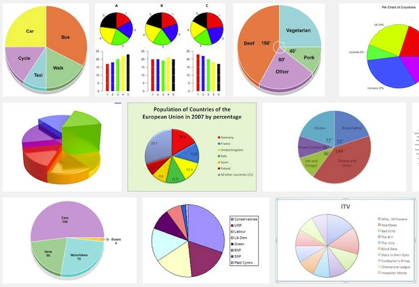Line graphs

Scatter plots
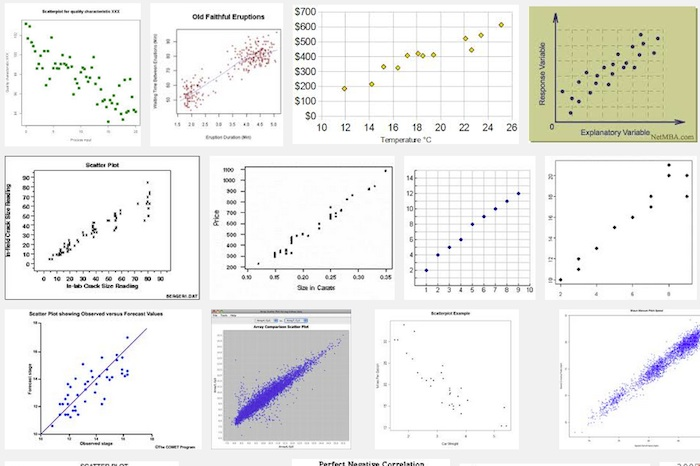Any others?
New era of data visualisation
Beautiful
Innovative
Interactive
Live data
Ubiquitous
How old were they?
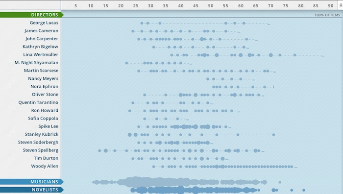The Flavour Connection
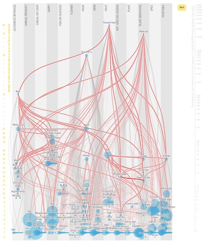The Startup Universe
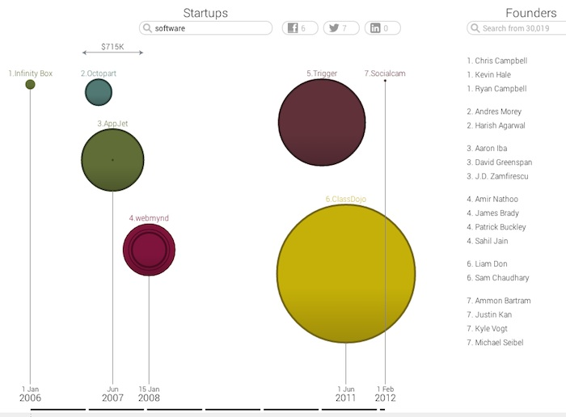Corporate taxes

US Gun Deaths

So here's some theory...
We have:
- Data (e.g. people, countries, events etc.)
- Connections (e.g. friendship, likes, similar to, defeated)
Data visualisation is the transformation of data (i.e. things) into:
- shape
- size
- position
- colour
Example

Data mapped to rectangles
Another example

Data mapped to circles
We're not thinking in terms of bar charts, pie charts etc.
Instead we're asking:
How we can transform our data into shape, size, position & colour?
So, how does this help us?
We can get more creative with data
How many different visualisations from one set of data?
The data
Spreadsheet from tennis-data.co.uk
Single table, each row represents a single match

Each match consists of: round, winner, loser, ATP points, games won in each set etc.
Wimbledon official website
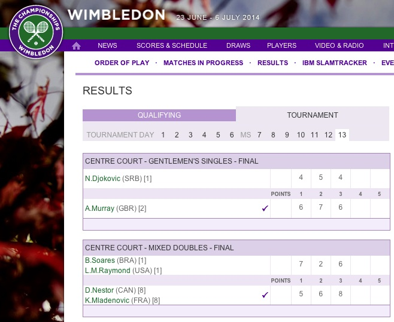Google images 'Wimbledon 2013 results'
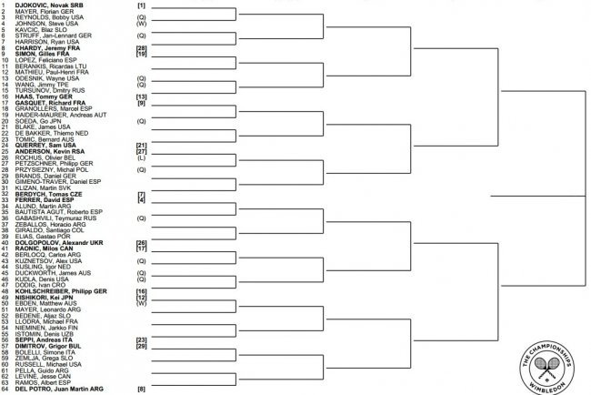
From 1877
Overviews
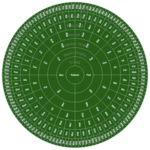
 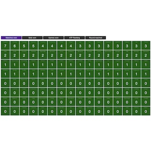
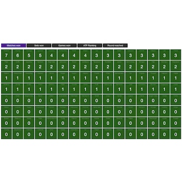


Heroes
 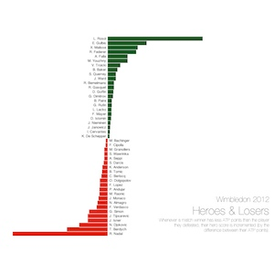
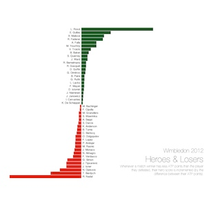

Interesting matches
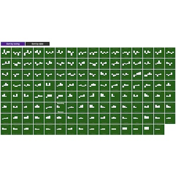Data visualisation has become...
Innovative
Interactive
Ubiquitous
Live
Beautiful
Thank You
Peter Cook / @prcweb / prcweb.co.uk